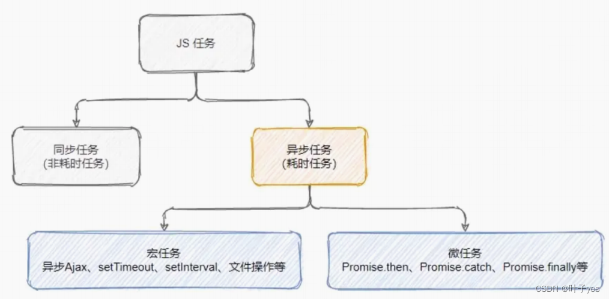
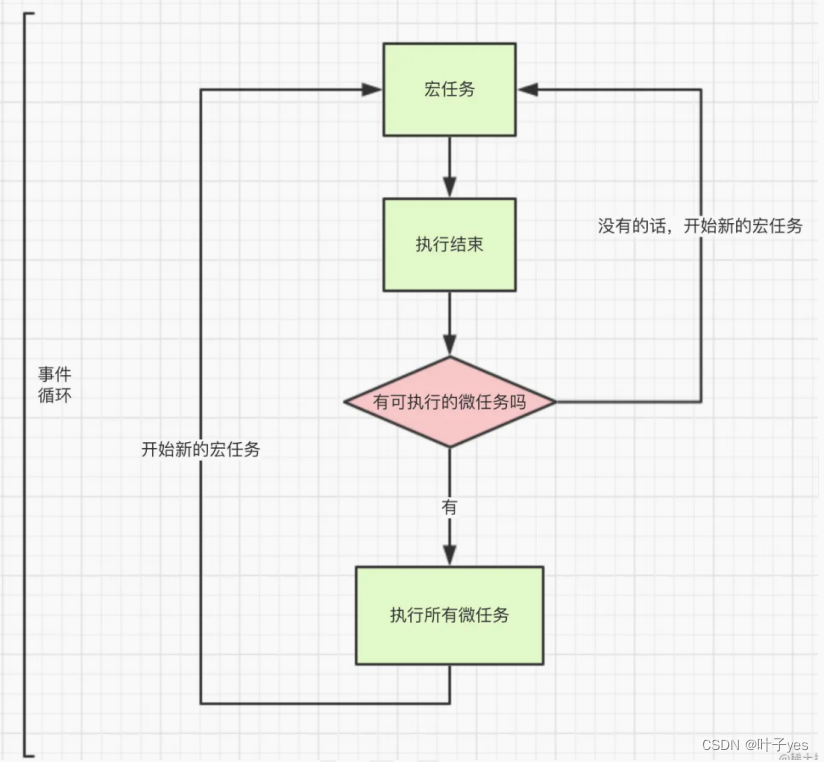
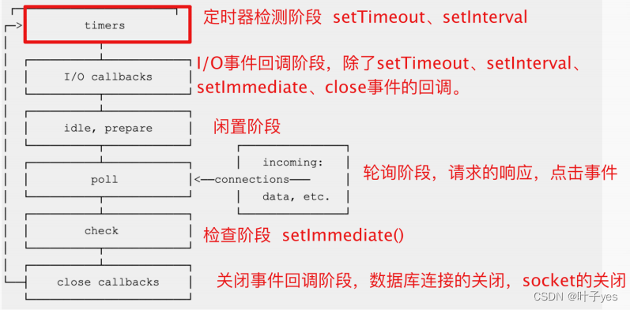

2024-07-03 21:28:53 · YinHao
js 任务分为同步任务和异步任务，异步任务又分为宏任务和微任务，其中异步任务属于耗时的任务。

宏任务：整体代码 script、setTimeout、setInterval、setImmediate、i/o 操作（输入输出，比如读取文件操作、网络请求）、ui render（dom 渲染，即更改代码重新渲染 dom 的过程）、异步 ajax 等
微任务：Promise（then、catch、finally）、async/await、process.nextTick、Object.observe(⽤来实时监测 js 中对象的变化)、 MutationObserver(监听 DOM 树的变化)
js 代码在执行的时候，会先执行同步代码，遇到异步宏任务则将异步宏任务放入宏任务队列中，遇到异步微任务则将异步微任务放入微任务队列中，当所有同步代码执行完毕后，再将异步微任务从队列中调入主线程执行，微任务执行完毕后，再将异步宏任务从队列中调入主线程执行，一直循环至所有的任务执行完毕（完成一次事件循环 EventLoop）。
注意：
每个异步宏任务执行完之后，都会检查是否存在待执行的微任务；如果有，则执行完所有的微任务之后，再继续执行下一个宏任务。

一次事件循环只能处理一个宏任务，一次事件循环可以将所有的微任务处理完毕。
事件循环是⼀个循环体，在循环体中有 6 个阶段，在每个阶段中，都有⼀个事件队列，不同的事件队列存储了不同类型的异步 API 的回调函数。 事件循环在每次执⾏的时候，都有 6 个阶段的事情要做：

setTimeout(function () {
console.log("1");
});
new Promise(function (resolve) {
console.log("2");
resolve();
}).then(function () {
console.log("3");
});
console.log("4");
//打印顺序 2 4 3 1
分析：
1、遇到 setTimeout，异步宏任务将其放到宏任务列表中，命名为 time1；
2、new Promise 在实例化过程中所执⾏的代码都是同步执⾏的（ function 中的代码），输出 2 ；
3、 将 Promise 中注册的回调函数放到微任务队列中，命名为 then1 ；
4、 执⾏同步任务 console.log(‘4’) ，输出 4 ，⾄此执⾏栈中的代码执⾏完毕；
5、 从微任务队列取出任务 then1 到主线程中，输出 3 ，⾄此微任务队列为空；
6、 从宏任务队列中取出任务 time1 到主线程中，输出 1 ，⾄此宏任务队列为空
console.log(1);
setTimeout(function () {
console.log(2);
let promise = new Promise(function (resolve, reject) {
console.log(3);
resolve();
}).then(function () {
console.log(4);
});
}, 1000);
setTimeout(function () {
console.log(5);
let promise = new Promise(function (resolve, reject) {
console.log(6);
resolve();
}).then(function () {
console.log(7);
});
}, 0);
let promise = new Promise(function (resolve, reject) {
console.log(8);
resolve();
})
.then(function () {
console.log(9);
})
.then(function () {
console.log(10);
});
console.log(11);
//执行顺序：1 8 11 9 10 5 6 7 2 3 4
分析：
1、 执⾏同步任务 console.log(1) ，输出 1 ；
2、 遇到 setTimeout 放到宏任务队列中，命名 time1 ；
3、 遇到 setTimeout 放到宏任务队列中，命名 time2 ；
4、new Promise 在实例化过程中所执⾏的代码都是同步执⾏的（ function 中的代码），输出 8 ；
5、 将 Promise 中注册的回调函数放到微任务队列中，命名为 then1 ；
6、 将 Promise 中注册的回调函数放到微任务队列中，命名为 then2 ；
7、 执⾏同步任务 console.log(11)， 输出 11 ；
8、 从微任务队列取出任务 then1 到主线程中，输出 9 ；
9、 从微任务队列取出任务 then2 到主线程中，输出 10 ，⾄此微任务队列为空；
10、从宏任务队列中取出 time2( 注意这⾥不是 time1 的原因是 time2 的执⾏时间为 0)；
11、 执⾏同步任务 console.log(5) ，输出 5 ；
12、new Promise 在实例化过程中所执⾏的代码都是同步执⾏的（ function 中的代码），输出 6 ；
13、 将 Promise 中注册的回调函数放到微任务队列中，命名为 then3 ，⾄此宏任务 time2 执⾏完成；
14、 从微任务队列取出任务 then3 到主线程中，输出 7 ，⾄此微任务队列为空；
15、 从宏任务队列中取出 time1 ，⾄此宏任务队列为空；
16、 执⾏同步任务 console.log(2) ，输出 2 ；
17、new Promise 在实例化过程中所执⾏的代码都是同步执⾏的（ function 中的代码），输出 3 ；
18、 将 Promise 中注册的回调函数放到微任务队列中，命名为 then4 ，⾄此宏任务 time1 执⾏完成；
19、 从微任务队列取出任务 then4 到主线程中，输出 4 ，⾄此微任务队列为空。
宏任务有 setTimeout、setInterval、setImmediate、i/o 操作、异步的 ajax，它们之间的执行也是有先后顺序，它们之间的执行顺序是：setImmediate --> setTimeout --> setInterval --> i/o 操作 --> 异步 ajax
例子：
let axios = require("axios");
let fs = require("fs");
console.log("begin");
fs.readFile("1.txt", (err, data) => {
console.log("fs");
});
axios
.get("https://api.muxiaoguo.cn/api/xiaohua?api_key=fd3270a0a9833e20")
.then((res) => {
console.log("axios");
});
setTimeout(() => {
console.log("setTimeout");
}, 0);
setImmediate(() => {
console.log("setImmediate");
});
(async function () {
console.log("async");
})();
console.log("end");
//执行顺序：begin async end setTimeout setImmediate fs axios
setImmediate 没有时间参数，它与延迟 0 毫秒的 setTimeout() 回调⾮常相似。所以当 setTimeout 延迟时间也是 0 毫秒时，谁在前面就先执行谁。此外如果 setTimeout 延迟时间不是 0 毫秒，它的执行顺序会在 i/o 操作之后。
微任务有 Promise（then、catch、finally）、process.nextTick 等，它们之间执行的先后顺序是：process.nextTick --> Promise
例子：
console.log("begin");
Promise.resolve().then(() => {
console.log("promise");
});
process.nextTick(() => {
console.log("nextTick");
});
console.log("end");
//执行顺序：begin end nextTick promise
process 表示进程，它是一个对象，对象里面有一个 nextTick。
nextTick 会在上一次事件循环结束，然后在下一次事件循环开始之前执行。
Vue.nextTick() 是 vue 的全局 api，它主要用来在下次 dom 更新循环结束之后执行延迟回调。在修改数据之后立即使用这个方法，获取更新后的 dom。
由于 vue 的更新机制是异步的，所以当数据修改之后，dom 还停留在更新之前，此时想要获取更新后的 dom，可以使用 nextTick，表示的是下次 dom 更新循环结束后执行的回调。
应用场景：created 中获取 dom 可以使用 nextTick
<!DOCTYPE html>
<html lang="en">
<head>
<meta charset="UTF-8" />
<meta http-equiv="X-UA-Compatible" content="IE=edge" />
<meta name="viewport" content="width=device-width, initial-scale=1.0" />
<title>Document</title>
<script src="https://cdn.jsdelivr.net/npm/vue@2.7.10/dist/vue.js"></script>
</head>
<body>
<div id="app">
<ul ref="container">
<li v-for="(item,index) in arr" :key="index">{{item}}</li>
</ul>
<button @click="add">增加</button>
</div>
<script>
new Vue({
el: "#app",
data() {
return {
arr: ["zhangsan", "lisi", "wangwu"],
};
},
created() {
// 使用nextTick可以在created生命周期获取dom节点
this.$nextTick(() => {
console.log(this.$refs.container);
});
},
methods: {
add() {
this.arr.push(parseInt(Math.random() * 10));
// 使用nextTick获取数据更新后的dom
this.$nextTick(() => {
console.log(this.$refs.container.childNodes);
});
},
},
});
</script>
</body>
</html>